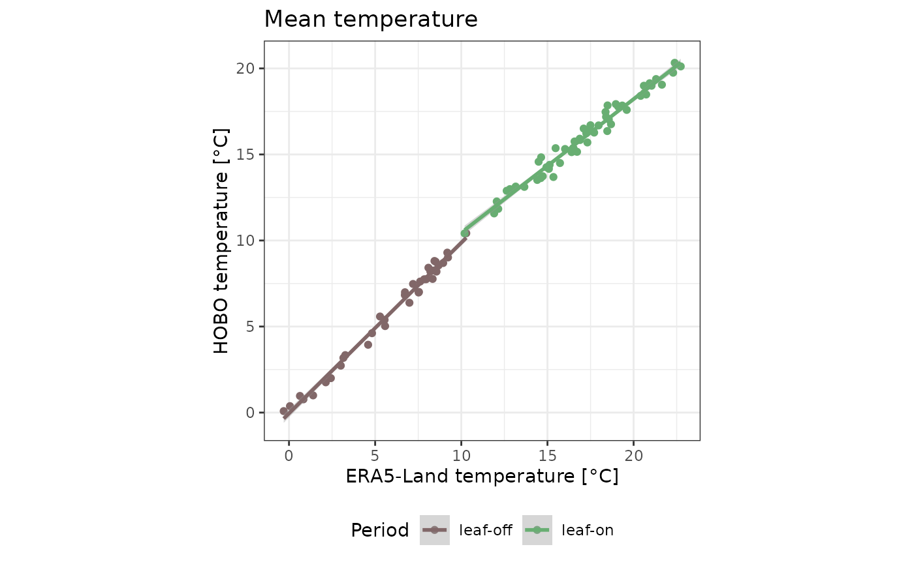

library(microclimr)
library(ggplot2)
library(dplyr)
library(tidyr)
library(lubridate)
library(broom)
data <- hobo %>%
left_join(rename(era, datetime = time)) %>%
mutate(season = ifelse(month_num %in% 5:11, "leaf-on", "leaf-off"))Data
data %>%
ggplot(aes(datetime, t_hobo)) +
geom_line(col = "#4a8b76", alpha = .5) +
theme_bw() +
xlab("") +
ylab("HOBO temperature [°C]") +
geom_vline(
xintercept = as_datetime("2023-05-01 00:00:00"),
linetype = "dashed", col = "darkgrey"
)
data %>%
ggplot(aes(datetime, tas)) +
geom_line(col = "#e4c284", alpha = .5) +
theme_bw() +
xlab("") +
ylab("ERA5-Land temperature [°C]") +
geom_vline(
xintercept = as_datetime("2023-05-01 00:00:00"),
linetype = "dashed", col = "darkgrey"
)
data %>%
ggplot(aes(x = datetime)) +
geom_line(aes(y = tas, col = "ERA5-Land"), alpha = .5) +
geom_line(aes(y = t_hobo, col = "HOBO"), alpha = .5) +
theme_bw() +
theme(legend.position = "bottom") +
ylab("Temperature [°C]") +
xlab("") +
scale_color_manual("", values = c("#e4c284", "#4a8b76")) +
geom_vline(
xintercept = as_datetime("2023-05-01 00:00:00"),
linetype = "dashed", col = "darkgrey"
)
Offset
data %>%
ggplot(aes(season, tas - t_hobo, col = season)) +
geom_boxplot() +
theme_bw() +
scale_color_manual("Period", values = c("#816768", "#68ae72")) +
ylab("Temperature offset [°C]") +
xlab("") +
theme(
axis.text.x = element_blank(), axis.ticks.x = element_blank(),
legend.position = "bottom"
)| season | offset |
|---|---|
| leaf-off | -0.0859868 |
| leaf-on | -1.1111745 |
Slope and equilibrium
data %>%
ggplot(aes(tas, t_hobo, col = season)) +
geom_point(alpha = .01) +
geom_abline(linetype = "dashed") +
geom_smooth(method = "lm", se = FALSE) +
theme_bw() +
scale_color_manual("Period", values = c("#816768", "#68ae72")) +
xlab("ERA5-Land temperature [°C]") +
ylab("HOBO temperature [°C]") +
coord_equal() +
theme(legend.position = "bottom")
#> `geom_smooth()` using formula = 'y ~ x'
data %>%
group_by(season) %>%
do(fit = lm(t_hobo ~ tas, data = .)) %>%
mutate(fit = list(tidy(fit))) %>%
unnest() %>%
mutate(term = recode(term,
"(Intercept)" = "intercept",
"tas" = "slope"
)) %>%
select(season, term, estimate) %>%
pivot_wider(names_from = "term", values_from = "estimate") %>%
mutate(equilibrium = intercept / (1 - slope)) %>%
select(season, slope, equilibrium) %>%
knitr::kable()
#> Warning: `cols` is now required when using `unnest()`.
#> ℹ Please use `cols = c(fit)`.| season | slope | equilibrium |
|---|---|---|
| leaf-off | 0.9578547 | 4.205531 |
| leaf-on | 0.7467874 | 12.581538 |
Fourier Transform
subdata <- filter(
data,
datetime >= as_datetime("2023-05-01 00:00:00"),
datetime < as_datetime("2023-05-08 00:00:00")
)
subdata %>%
ggplot(aes(datetime, t_hobo)) +
geom_line(col = "#4a8b76") +
theme_bw() +
xlab("") +
ylab("HOBO temperature [°C]")
fft_metrics <- function(x, sample_rate = 1) {
cs <- fft(x)
cs <- cs / length(cs)
distance_center <- function(c) signif(Mod(c), 4)
angle <- function(c) signif(180 * Arg(c) / pi, 3)
tibble(
cycle = 0:(length(cs) - 1),
freq = 0:(length(cs) - 1) * sample_rate / length(cs),
strength = sapply(cs, distance_center),
delay = sapply(cs, angle)
)
}
fft_metrics(subdata$t_hobo) %>%
ggplot(aes(freq, strength)) +
geom_col() +
theme_bw()